here::here("code", "_common.R") |>
source()
# Load packages
if (!requireNamespace("pacman")) install.packages("pacman")
pacman::p_load(cmdstanr, posterior, insight)13 Introduzione pratica a Stan
Introduzione
Nei capitoli precedenti abbiamo visto come l’algoritmo di Metropolis fornisca una soluzione generale al problema dell’inferenza bayesiana e come i linguaggi di programmazione probabilistica abbiano reso questa soluzione praticabile nella ricerca quotidiana. Ora è il momento di incontrare lo strumento che utilizzeremo concretamente nel nostro percorso: Stan.
Stan non è semplicemente un altro software statistico. È un linguaggio di programmazione probabilistica progettato per esprimere modelli bayesiani in modo chiaro e flessibile e per eseguire l’inferenza con algoritmi di campionamento allo stato dell’arte. In particolare, Stan utilizza varianti avanzate dell’Hamiltonian Monte Carlo (HMC), come l’algoritmo NUTS, che offrono efficienza e affidabilità molto superiori rispetto al semplice Metropolis.
Dal punto di vista concettuale, però, nulla cambia: la logica rimane la stessa che abbiamo già compreso. Stan non fa “magia”, ma implementa con grande efficacia ciò che Metropolis aveva già reso possibile. Per questo è importante vederlo come la naturale evoluzione pratica del percorso che abbiamo seguito fin qui.
Per la ricerca psicologica, Stan ha un vantaggio particolare. Molti dei modelli che ci interessano – modelli gerarchici, modelli di apprendimento, modelli dinamici – richiedono più parametri e strutture complesse. Implementarli a mano sarebbe quasi impossibile. Con Stan, invece, possiamo concentrarci sul modello teorico e tradurlo in codice relativamente semplice, lasciando al software la gestione dei dettagli computazionali.
Nei prossimi capitoli vedremo come iniziare a scrivere modelli in Stan, partendo da esempi elementari per arrivare a strutture più articolate. L’obiettivo non è soltanto imparare un nuovo linguaggio, ma acquisire la capacità di formalizzare i modelli psicologici come processi generativi, traducendoli in analisi statistiche riproducibili e trasparenti.
Panoramica del capitolo
- I blocchi del codice Stan.
- Scrivere e stimare modelli semplici con
cmdstanr.
- Interpretare i risultati MCMC tramite riassunti e diagnostiche.
- Valutare la coerenza del modello con prior e posterior predictive check.
13.1 Programmazione probabilistica con Stan
Ogni programma Stan è organizzato in blocchi distinti, che corrispondono a funzioni precise (Nicenboim et al., 2025). Nel blocco data dichiariamo le variabili osservate che passiamo dall’esterno; in parameters indichiamo le quantità ignote che vogliamo stimare; nel blocco model specifichiamo le assunzioni probabilistiche — cioè le distribuzioni a priori e la verosimiglianza; infine, in generated quantities possiamo calcolare misure derivate, come predizioni o log-likelihood, che non influiscono sulla stima ma sono utili per l’analisi successiva. Questa architettura modulare rende Stan intuitivo e adattabile a un’ampia gamma di applicazioni statistiche.
13.1.1 Lavorare con Stan in R
L’interfaccia cmdstanr per R segue un workflow ben definito:
- scrittura del modello in un file
.stan,
- compilazione del modello,
- passaggio dei dati come lista R ,
- esecuzione del campionamento con
sample(),
- analisi dei risultati mediante pacchetti specializzati (
posterior,bayesplot).
Possiamo pensare a un programma Stan come a una “ricetta”. Nel blocco data mettiamo gli ingredienti che già conosciamo (i dati osservati), in parameters dichiariamo gli ingredienti mancanti (i parametri da stimare), in model scriviamo le regole della preparazione (le distribuzioni a priori e la verosimiglianza) e in generated quantities prepariamo i contorni (diagnostiche, predizioni) che non cambiano la ricetta principale, ma la rendono più completa.
In pratica, lavorare con Stan da R segue sempre lo stesso schema. Prima si scrive il modello in un file .stan; poi lo si compila, cioè lo si traduce in un eseguibile; quindi si preparano i dati in una lista R con gli stessi nomi dichiarati nel modello; infine si lancia il campionamento con la funzione sample(). Una volta ottenuti i campioni a posteriori, possiamo analizzarli con pacchetti come posterior o bayesplot, che facilitano sia i riassunti numerici sia le visualizzazioni.
Stan utilizza un sistema di tipizzazione statica: tutte le variabili devono essere dichiarate con tipi specifici (int per interi, real per valori reali, vector per vettori) e possono includere vincoli (es. lower=0 per valori positivi). Questo approccio aumenta la robustezza del codice e previene errori comuni nella specificazione dei modelli.
13.2 Modello Beta–Binomiale
Come primo esempio costruiamo un modello molto semplice, ma già sufficiente per illustrare i principi fondamentali della programmazione in Stan. L’obiettivo è stimare la probabilità di successo \(\theta\) in una sequenza di prove Bernoulliane indipendenti.
Per rendere l’idea concreta, immaginiamo di lanciare un dado mille volte e di registrare il risultato come variabile dicotomica: assegniamo il valore 1 se esce il numero 6 (considerato “successo”), e 0 in tutti gli altri casi (“fallimento”). Se il dado fosse perfettamente equilibrato, la probabilità di successo sarebbe \(\theta = 1/6 \approx 0.167\). Tuttavia, nell’approccio bayesiano non assumiamo a priori che il dado sia equo: lasciamo che siano i dati, in combinazione con una distribuzione a priori esplicita, a informare il valore di \(\theta\).
Ecco un esempio di generazione dei dati in R:
set.seed(123)
n <- 1000
dice_df <- tibble(res = sample(1:6, size = n, replace = TRUE))
y <- as.integer(dice_df$res == 6) # 1 se esce “6”, 0 altrimenti
mean(y) # frequenza relativa di “6”
#> [1] 0.164Il modello statistico che sottende a questa situazione è molto semplice:
- ogni osservazione segue una distribuzione Bernoulliana, \(y_i \sim \text{Bernoulli}(\theta)\) per \(i = 1, \dots, N\);
- equivalendo a dire che il numero totale di successi \(k = \sum_i y_i\) segue una distribuzione Binomiale, \(k \sim \text{Binomiale}(N,\theta)\);
- come prior adottiamo una distribuzione uniforme su \([0,1]\), cioè \(\theta \sim \text{Beta}(1,1)\).
Vale la pena notare che, se in Stan dichiariamo un parametro vincolato all’intervallo \([0,1]\) ma non specifichiamo alcun prior, il linguaggio assegna automaticamente proprio questa distribuzione uniforme, che corrisponde a una Beta(1,1).
13.2.1 Prima versione: modello Bernoulliano vettoriale
Il modo più diretto di tradurre il modello in Stan è scrivere la verosimiglianza come sequenza di esiti Bernoulliani. Questo approccio ha anche un valore didattico, perché mostra chiaramente la corrispondenza tra dati osservati e modello probabilistico. Stan, inoltre, vettorializza automaticamente le operazioni sugli array, rendendo il codice conciso:
stancode <- "
data {
int<lower=1> N; // numero di prove
array[N] int<lower=0, upper=1> y; // esiti (0/1)
}
parameters {
real<lower=0, upper=1> theta; // probabilità di successo
}
model {
theta ~ beta(1, 1); // prior uniforme su [0,1]
y ~ bernoulli(theta); // verosimiglianza
}
"Il funzionamento dei blocchi è intuitivo: nel blocco data dichiariamo le variabili osservate (N e il vettore binario y); nel blocco parameters indichiamo il parametro da stimare, \(\theta\); infine, nel blocco model specifichiamo sia la distribuzione a priori sia la verosimiglianza.
Dal punto di vista interno, ogni riga del tipo x ~ distribuzione(...) aggiunge la log-densità (o log-massa) alla quantità interna target, che rappresenta la log-posterior. Se vogliamo essere più espliciti, possiamo scrivere il codice in forma equivalente:
target += beta_lpdf(theta | 1, 1);
target += bernoulli_lpmf(y | theta);Questa seconda scrittura, sebbene meno compatta, è particolarmente utile quando vogliamo costruire verosimiglianze personalizzate o introdurre modifiche non standard.
13.2.2 Seconda versione: modello binomiale sui successi totali
L’approccio Bernoulliano visto in precedenza ha il pregio della chiarezza, ma può risultare ridondante: stiamo in realtà scrivendo la stessa formula mille volte, una per ciascun lancio del dado. In termini statistici, però, sappiamo che non è necessario conservare l’intera sequenza di zeri e uno: ai fini della stima di \(\theta\) conta solo il numero totale di successi osservati. Questa proprietà prende il nome di sufficienza della statistica \(k = \sum_i y_i\) per la distribuzione binomiale.
Se dunque nei mille lanci abbiamo osservato, ad esempio, 170 “6”, tutta l’informazione rilevante per stimare \(\theta\) è contenuta in quel singolo numero, non nella sequenza dettagliata dei lanci. La distribuzione binomiale ci permette di formalizzare questa idea in modo compatto, portando a una specificazione del modello più efficiente, ma del tutto equivalente sul piano inferenziale.
Ecco la traduzione in Stan:
stancode <- "
data {
int<lower=1> N; // numero di prove
array[N] int<lower=0, upper=1> y; // esiti (0/1)
}
transformed data {
int<lower=0, upper=N> k = sum(y); // numero totale di successi
}
parameters {
real<lower=0, upper=1> theta; // probabilità di successo
}
model {
theta ~ beta(1, 1); // prior uniforme
k ~ binomial(N, theta); // verosimiglianza sui successi totali
}
"Questa versione concentra la verosimiglianza in un’unica riga, calcolata direttamente sul numero complessivo di successi. Le catene MCMC che otteniamo da questo modello coincidono, entro il rumore Monte Carlo, con quelle prodotte dalla versione Bernoulliana, ma richiedono meno operazioni e risultano quindi più efficienti dal punto di vista computazionale.
Come per la prima versione, possiamo arricchire il modello con un blocco generated quantities per ottenere log-likelihood o repliche predittive. Queste quantità derivate non modificano l’inferenza su \(\theta\), ma ci consentono di eseguire controlli diagnostici, confrontare modelli alternativi o visualizzare come il modello riproduce i dati osservati.
Una volta scritto il modello, il passo successivo è la compilazione. Stan traduce il codice in linguaggio C++ e lo trasforma in un piccolo eseguibile che potrà essere richiamato ogni volta che lanceremo le stime. Questo passaggio richiede qualche secondo solo la prima volta; in seguito, il modello compilato può essere riutilizzato con dataset diversi senza dover ricompilare da capo, con un notevole risparmio di tempo.
stanmod <- cmdstanr::cmdstan_model(
write_stan_file(stancode),
compile = TRUE
)Preparato l’eseguibile, dobbiamo passare a Stan i dati necessari. In questo caso servono due elementi: il numero totale di prove e il vettore con gli esiti dei lanci. È importante che i nomi e i tipi corrispondano esattamente a quanto dichiarato nel blocco data del modello Stan, altrimenti il programma restituirà un errore.
A questo punto siamo pronti per il campionamento MCMC. Nella chiamata a sample() specifichiamo quante iterazioni dedicare alla fase di warmup (che serve per adattare l’algoritmo), quante iterazioni utilizzare effettivamente per l’inferenza, e quante catene indipendenti far partire in parallelo. Due parametri aggiuntivi – adapt_delta e max_treedepth – aiutano a rendere più stabili e accurati i passi dell’algoritmo NUTS, soprattutto in modelli più complessi.
fit1 <- stanmod$sample(
data = data_list,
iter_warmup = 1000,
iter_sampling = 4000,
chains = 4,
parallel_chains = 4,
seed = 4790,
refresh = 0, # meno output a schermo
adapt_delta = 0.9, # maggiore prudenza nel passo HMC
max_treedepth = 12 # profondità massima dell’albero NUTS
)Con il modello stimato, possiamo guardare un riepilogo sintetico delle stime. La funzione summary() di Stan mostra media, deviazione standard, quantili e diagnostiche come \(\hat R\) ed ESS.
print(fit1$summary(variables = "theta"), n = Inf)
#> # A tibble: 1 × 10
#> variable mean median sd mad q5 q95 rhat ess_bulk ess_tail
#> <chr> <dbl> <dbl> <dbl> <dbl> <dbl> <dbl> <dbl> <dbl> <dbl>
#> 1 theta 0.165 0.165 0.012 0.012 0.146 0.185 1.001 5070.123 4701.800In alternativa, il pacchetto posterior permette di estrarre i campioni e calcolare con maggiore flessibilità le statistiche che ci interessano:
draws <- fit1$draws(variables = "theta", format = "draws_matrix")
posterior::summarise_draws(
draws,
mean, sd, ~quantile(.x, c(0.025, 0.5, 0.975)), rhat, ess_bulk, ess_tail
)
#> # A tibble: 1 × 9
#> variable mean sd `2.5%` `50%` `97.5%` rhat ess_bulk ess_tail
#> <chr> <dbl> <dbl> <dbl> <dbl> <dbl> <dbl> <dbl> <dbl>
#> 1 theta 0.165 0.012 0.143 0.165 0.189 1.001 5070.123 4701.800Come regola generale, valori di \(\hat R\) molto vicini a 1 (idealmente < 1.01) e un numero elevato di campioni effettivi (ESS) indicano che le catene hanno esplorato bene la distribuzione a posteriori.
Oltre alle statistiche numeriche, le diagnostiche grafiche aiutano a valutare a colpo d’occhio la qualità del campionamento.
bayesplot::mcmc_trace(fit1$draws("theta"), n_warmup = 1000)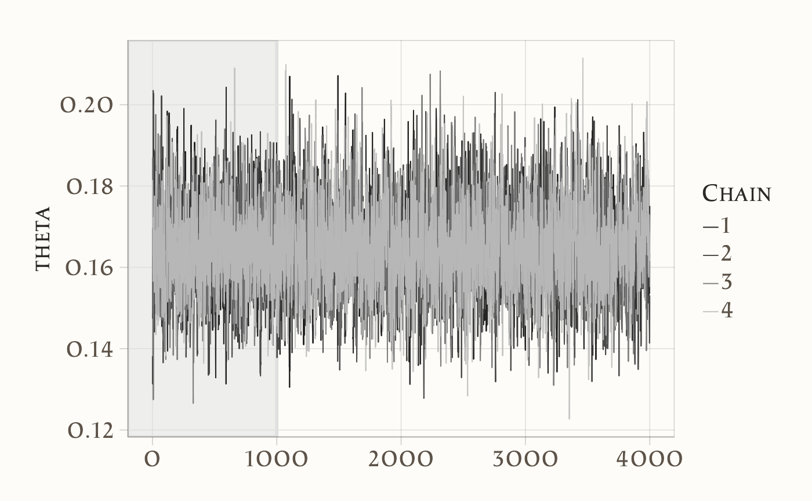
bayesplot::mcmc_dens_overlay(fit1$draws("theta"))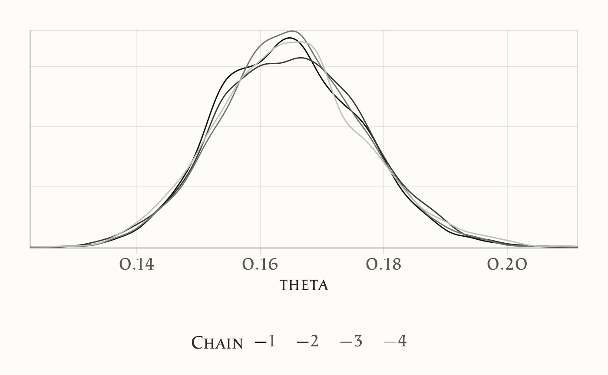
Nel traceplot, le catene dovrebbero mescolarsi bene senza mostrare trend persistenti; nel grafico delle densità, le distribuzioni delle diverse catene dovrebbero risultare sovrapposte.
In sintesi: la media a posteriori di \(\theta\) fornisce una stima puntuale della probabilità di ottenere un “6”, l’intervallo di credibilità quantifica l’incertezza residua, e le diagnostiche (R-hat vicino a 1, ESS alto, catene ben mescolate) garantiscono che i campioni siano affidabili per trarre conclusioni.
13.2.3 Distribuzione predittiva posteriore
Stimare \(\theta\) non basta: spesso ciò che ci interessa davvero è capire quali conseguenze pratiche derivano dai risultati. In altre parole, vogliamo sapere cosa il modello ci dice su dati futuri. Per esempio: se rilanciassimo il dado altre mille volte, quanti “6” potremmo aspettarci?
La risposta si ottiene con la distribuzione predittiva posteriore. Condizionatamente a un valore di \(\theta\), il numero di successi nei nuovi lanci segue una distribuzione binomiale:
\[ y_{\text{rep}} \mid \theta \sim \text{Binomiale}(n_{\text{new}}, \theta). \]
Ma noi non conosciamo \(\theta\) con certezza: ne abbiamo solo una distribuzione a posteriori. Per questo motivo, la distribuzione predittiva si ottiene integrando la probabilità condizionata \(p(y_{\text{rep}} \mid \theta)\) rispetto alla distribuzione a posteriori di \(\theta\):
\[ p(y_{\text{rep}} \mid y) = \int p(y_{\text{rep}} \mid \theta)\, p(\theta \mid y)\, d\theta. \]
Dal punto di vista operativo, il procedimento è semplice: estraiamo valori di \(\theta\) dalla posterior e, per ciascuno di essi, simuliamo un nuovo conteggio \(y_{\text{rep}}\). L’insieme di queste simulazioni costituisce la distribuzione predittiva.
# Numero di futuri lanci da simulare
n_new <- 1000
# Estrazione dei campioni di theta (vettore numerico)
theta_draws <- as.numeric(draws[, "theta"])
# Simulazione predittiva
yrep_count <- rbinom(n = length(theta_draws), size = n_new, prob = theta_draws)
# Riassunti predittivi
mean(yrep_count) # valore atteso di "6" su n_new lanci
#> [1] 165
quantile(yrep_count, c(0.025, 0.5, 0.975)) # intervallo predittivo 95%
#> 2.5% 50% 97.5%
#> 134 164 199Per visualizzare i risultati, rappresentiamo la distribuzione dei conteggi simulati con un istogramma, segnando con una linea verticale tratteggiata il numero di successi realmente osservati.
tibble(count = yrep_count) |>
ggplot(aes(x = count)) +
geom_histogram(bins = 30, color = "white") +
geom_vline(xintercept = sum(y), linetype = "dashed") +
labs(
x = "Numero di '6' osservati",
y = "Frequenza"
)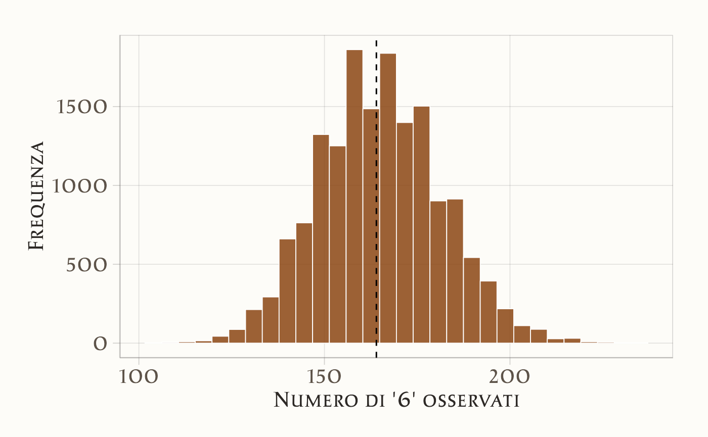
Come leggere il grafico. L’istogramma mostra la variabilità attesa del numero di “6” su mille lanci futuri. La distribuzione è centrata intorno al valore atteso \(n_{\text{new}} \cdot \mathbb{E}[\theta \mid y]\), cioè il numero medio di successi secondo la stima a posteriori. Se il dado fosse perfettamente equilibrato (\(\theta = 1/6\)), ci aspetteremmo circa 167 successi su 1000, con un intervallo predittivo di circa 150–185. Se i dati simulati si discostano molto da questo scenario, il modello ci sta suggerendo che il dado potrebbe non essere equo.
Come controllo aggiuntivo, possiamo sfruttare la formula chiusa della distribuzione Beta–Binomiale: con prior \(\text{Beta}(1,1)\) e \(k\) successi osservati, la predittiva per \(n_{\text{new}}\) prove segue una distribuzione \(\text{Beta–Binomiale}(n_{\text{new}}, 1+k, 1+N-k)\). I suoi quantili dovrebbero essere coerenti con quelli ottenuti tramite simulazione.
13.2.4 Mini check analitico
Un ulteriore modo per verificare i risultati è confrontare le stime prodotte da Stan con quelle ottenute direttamente dalla forma analitica della distribuzione a posteriori. In questo caso, con prior uniforme e verosimiglianza binomiale, sappiamo che la distribuzione a posteriori di \(\theta\) è ancora una Beta. Possiamo quindi calcolare media e intervallo di credibilità in chiuso e confrontarli con i valori ricavati dal campionamento MCMC:
Le differenze rispetto ai risultati di Stan dovrebbero essere minime e spiegabili unicamente con il normale rumore Monte Carlo. Questo confronto fornisce quindi una garanzia ulteriore che il modello sia stato implementato e stimato correttamente.
13.3 Dati continui: stima della media con varianza nota
Passiamo ora a un caso molto comune nelle scienze psicologiche: la stima della media di popolazione di una variabile continua. Pensiamo, ad esempio, ai punteggi ottenuti in un test di intelligenza (QI).
Per semplicità ipotizziamo che la deviazione standard \(\sigma\) sia nota. È un’ipotesi forte, certo, ma ci permette di concentrare l’attenzione su un solo parametro incognito: la media \(\mu\). Questa assunzione semplifica il modello e rende più chiaro il passaggio dall’impostazione classica a quella bayesiana.
Molti dati psicologici possono essere approssimati da una distribuzione normale: è il caso dei punteggi standardizzati come il QI, che hanno distribuzioni simili a una gaussiana in popolazione. Immaginiamo quindi di raccogliere i punteggi di \(n=30\) persone, supponendo che la deviazione standard sia \(\sigma = 15\) e che la media reale sia 105.
set.seed(123)
n <- 30
sigma <- 15
y_cont <- rnorm(n, mean = 105, sd = sigma)
tibble(y = y_cont) |>
ggplot(aes(x = y)) +
geom_histogram(bins = 15) +
labs(x = "Punteggio", y = "Frequenza")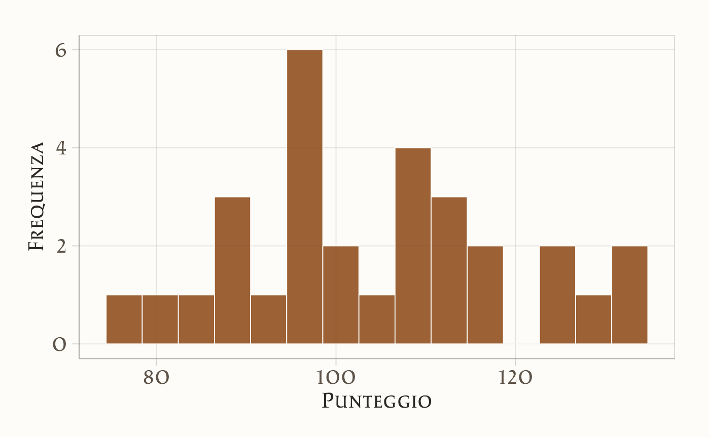
In questo scenario, il modello statistico si scrive così:
- Verosimiglianza: \(y_i \sim \mathcal{N}(\mu, \sigma)\), con \(\sigma\) noto.
- Prior su \(\mu\): \(\mu \sim \mathcal{N}(\mu_0, \tau)\), con \(\mu_0 = 100\) come media attesa a priori e \(\tau = 30\) come deviazione standard del prior, scelta piuttosto ampia per riflettere un’incertezza elevata.
Da notare che \(\mu\) può assumere qualsiasi valore reale: per questo il prior corretto è una distribuzione normale definita su tutto \(\mathbb{R}\).
Ecco la traduzione del modello in Stan:
stancode_norm <- "
data {
int<lower=1> N;
vector[N] y; // dati continui
real<lower=0> sigma; // sd nota
real mu0; // media del prior su mu
real<lower=0> tau; // sd del prior su mu
}
parameters {
real mu; // media: parametro reale non vincolato
}
model {
mu ~ normal(mu0, tau); // prior corretto su mu
y ~ normal(mu, sigma); // likelihood
}
"Prepariamo i dati in R in modo che siano coerenti con quanto richiesto dal blocco data del modello:
Compiliamo il modello:
stanmod2 <- cmdstanr::cmdstan_model(write_stan_file(stancode_norm), compile = TRUE)E infine lanciamo il campionamento MCMC:
fit2 <- stanmod2$sample(
data = data_list2,
iter_warmup = 1000,
iter_sampling = 4000,
chains = 4,
parallel_chains = 4,
seed = 4790,
refresh = 0
)I risultati possono essere riepilogati in forma sintetica:
print(fit2$summary(variables = "mu"), n = Inf)
#> # A tibble: 1 × 10
#> variable mean median sd mad q5 q95 rhat ess_bulk ess_tail
#> <chr> <dbl> <dbl> <dbl> <dbl> <dbl> <dbl> <dbl> <dbl> <dbl>
#> 1 mu 104.240 104.236 2.721 2.740 99.751 108.710 1.001 5499.842 7540.041Oppure, con il pacchetto posterior, possiamo estrarre i campioni e calcolare statistiche più flessibili, come medie, quantili e diagnostiche:
draws2 <- fit2$draws(variables = "mu", format = "draws_matrix")
posterior::summarise_draws(
draws2, mean, sd, ~quantile(.x, c(0.025, 0.5, 0.975)), rhat, ess_bulk, ess_tail
)
#> # A tibble: 1 × 9
#> variable mean sd `2.5%` `50%` `97.5%` rhat ess_bulk ess_tail
#> <chr> <dbl> <dbl> <dbl> <dbl> <dbl> <dbl> <dbl> <dbl>
#> 1 mu 104.240 2.721 98.916 104.236 109.627 1.001 5499.842 7540.041L’interpretazione è immediata:
- valori di \(\hat R\) vicini a 1 e effective sample size elevato ci dicono che le catene sono ben miscelate e la stima è affidabile;
- la media a posteriori di \(\mu\) rappresenta la nostra miglior stima puntuale della media di popolazione;
- l’intervallo di credibilità (ad esempio al 95%) quantifica l’incertezza residua su \(\mu\).
In questo modo otteniamo non solo una stima centrale, ma un quadro completo della plausibilità dei valori possibili per la media di popolazione, dato quanto osservato.
13.3.1 Controllo analitico della coniugatezza
Il modello che abbiamo specificato ha una proprietà molto comoda: la coniugatezza. Quando usiamo un prior normale per la media \(\mu\) e assumiamo nota la varianza \(\sigma^2\), anche la distribuzione a posteriori di \(\mu\) rimane normale. Questo ci permette di calcolare media e varianza della posterior in forma chiusa, senza bisogno di simulazioni MCMC.
In particolare, la varianza e la media della distribuzione a posteriori si ottengono come:
\[ \text{Var}(\mu \mid y) \;=\; \left(\frac{n}{\sigma^2} + \frac{1}{\tau^2}\right)^{-1}, \quad \mathbb{E}[\mu \mid y] \;=\; \text{Var}(\mu \mid y)\,\left(\frac{n\bar y}{\sigma^2} + \frac{\mu_0}{\tau^2}\right). \]
Con i nostri dati possiamo calcolare questi valori direttamente:
Ora possiamo confrontare questi risultati analitici con quanto ottenuto tramite campionamento MCMC:
mu_draws <- as.numeric(draws2[, "mu"])
c(mean_mcmc = mean(mu_draws), sd_mcmc = sd(mu_draws))
#> mean_mcmc sd_mcmc
#> 104.24 2.72E per completezza, guardiamo anche i quantili della distribuzione campionata:
Le due soluzioni dovrebbero concordare molto bene: la formula chiusa ci dà il risultato “esatto”, mentre l’MCMC lo approssima tramite simulazione. Le piccole discrepanze sono attribuibili al normale rumore Monte Carlo, che diminuisce all’aumentare del numero di campioni.
13.3.2 Visualizzazione
Una volta stimato il modello, è molto utile osservare graficamente i campioni MCMC per verificare sia la qualità del campionamento sia la forma della distribuzione a posteriori. Il pacchetto bayesplot fornisce strumenti immediati per questo scopo.
Un primo passo è guardare l’istogramma dei campioni:
bayesplot::mcmc_hist(fit2$draws("mu"))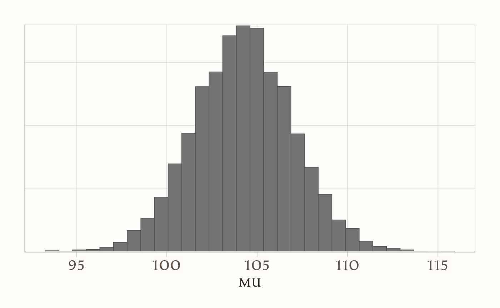
Questo grafico mostra la distribuzione stimata della media \(\mu\): non un singolo numero, ma un ventaglio di valori plausibili con le loro frequenze relative.
Possiamo poi controllare l’andamento delle catene con un traceplot:
bayesplot::mcmc_trace(fit2$draws("mu"), n_warmup = 1000)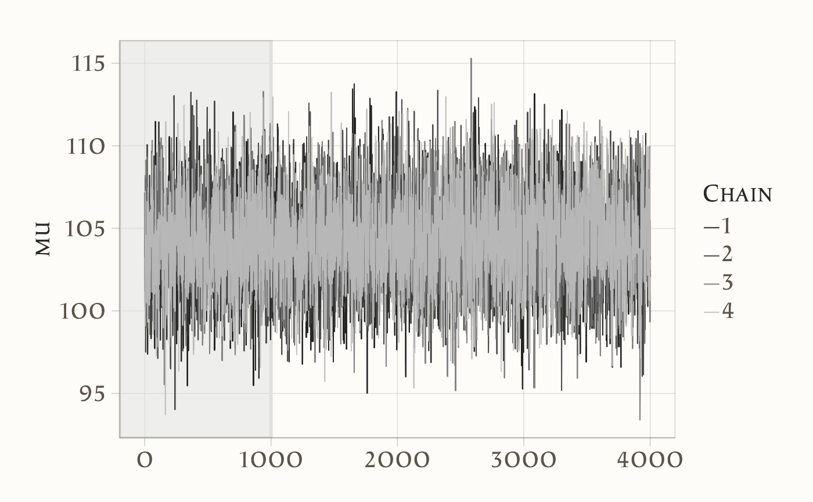
Qui l’idea è semplice: le linee delle catene devono sembrare “ben mescolate”, senza trend evidenti o zone piatte. È un indicatore visivo della corretta esplorazione dello spazio dei parametri.
Infine, è utile sovrapporre le distribuzioni stimate dalle diverse catene per verificarne la concordanza:
bayesplot::mcmc_dens_overlay(fit2$draws("mu"))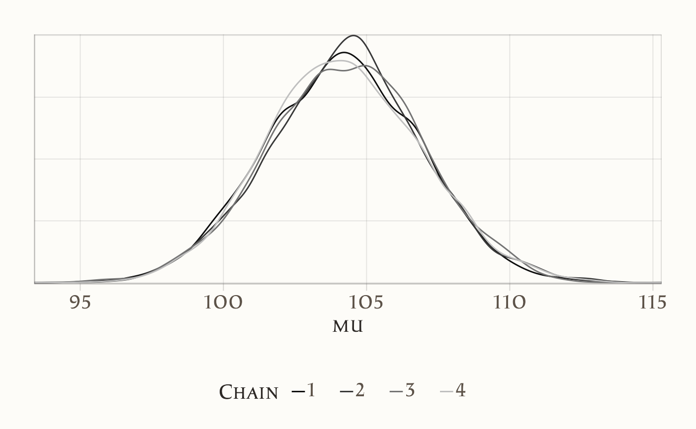
Se le curve si sovrappongono bene, abbiamo un’ulteriore conferma che le catene hanno raggiunto la stessa distribuzione stazionaria.
In sintesi, questo esempio rappresenta una sorta di “test bayesiano della media” con deviazione standard nota e un prior normale ampio su \(\mu\). A differenza dell’approccio frequentista, non otteniamo soltanto una stima puntuale o un intervallo, ma un’intera distribuzione a posteriori della media. Questo è un vantaggio importante: l’incertezza stimata può essere comunicata in modo trasparente e, soprattutto, può essere propagata nelle fasi successive dell’analisi, ad esempio in previsioni o decisioni basate sul modello.
Una nota pratica su Stan: se omettessimo la prior su \(\mu\), il software assumerebbe implicitamente una prior impropria piatta su \(\mathbb{R}\). Sebbene ciò possa funzionare in casi semplici, didatticamente preferiamo specificare in modo esplicito un prior normale (anche molto ampio). In questo modo le assunzioni sono sempre chiare e il modello rimane ben definito.
13.3.3 Intervalli di credibilità
In un’analisi bayesiana non otteniamo una singola stima del parametro, ma una distribuzione a posteriori che descrive tutta l’incertezza residua. Gli intervalli di credibilità servono a riassumere questa distribuzione in modo intuitivo:
Dato il modello e i dati osservati, c’è una probabilità prefissata (ad esempio 94%) che il parametro cada all’interno dell’intervallo.
È un’interpretazione semplice e diretta, molto più naturale rispetto a quella degli intervalli di confidenza frequentisti.
13.3.3.1 Due definizioni principali
-
ETI (Equal-Tailed Interval): l’intervallo “a code uguali”. Lascia la stessa probabilità nelle due code della distribuzione (es. 3% a sinistra e 3% a destra in un intervallo al 94%).
- Vantaggio: è invariante a trasformazioni monotone (se trasformo il parametro, trasformo anche i quantili).
- Svantaggio: se la posterior è molto asimmetrica, l’intervallo può risultare poco compatto.
-
HDI (Highest Density Interval): l’intervallo “a massima densità”. È il più stretto possibile che contiene la probabilità fissata.
- Vantaggio: rimane compatto anche con distribuzioni asimmetriche.
- Svantaggio: non è invariante a trasformazioni monotone; in presenza di distribuzioni multimodali può perfino risultare “spezzato” in più sotto-intervalli.
Se la distribuzione a posteriori è simmetrica e unimodale (per esempio una Normale), ETI e HDI coincidono.
13.3.3.2 Esempio con i campioni di \(\mu\)
Partiamo dai campioni MCMC della media \(\mu\):
mu_draws <- as.numeric(fit2$draws("mu"))Calcoliamo sia ETI che HDI al 94% con il pacchetto bayestestR:
13.3.3.3 Visualizzazione
Con bayesplot::mcmc_areas() possiamo visualizzare gli intervalli centrali (ETI) e aggiungere i limiti HDI come linee verticali:
p <- bayesplot::mcmc_areas(fit2$draws("mu"), prob = 0.94) +
xlab(expression(mu)) + ylab("Densità")
p +
geom_vline(xintercept = hdi94$CI_low, linetype = "dashed") +
geom_vline(xintercept = hdi94$CI_high, linetype = "dashed")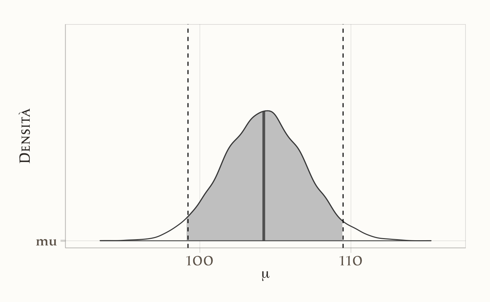
13.3.3.4 Posterior asimmetrica: esempio Beta
Per apprezzare meglio la differenza, consideriamo una distribuzione asimmetrica, come una Beta(6,2):
ggplot(data.frame(theta = theta_draws), aes(x = theta)) +
geom_density() +
geom_vline(xintercept = c(eti_beta$CI_low, eti_beta$CI_high), linewidth = 0.7) +
geom_vline(xintercept = c(hdi_beta$CI_low, hdi_beta$CI_high),
linewidth = 1.2, linetype = "dashed") +
labs(x = expression(theta), y = "Densità")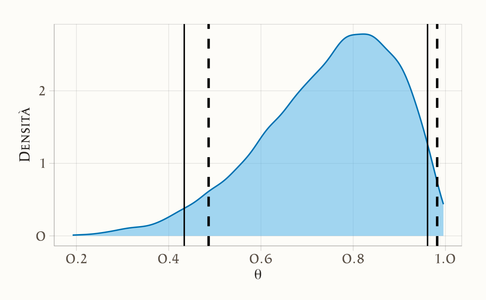
Qui si vede bene che l’HDI è più corto, perché concentra l’intervallo nelle zone di massima densità, evitando code poco informative.
13.3.3.5 Quale livello usare? 89%, 94% o 95%?
- 95%: è la scelta più familiare (ereditata dal frequentismo).
- 94%: molto usata in manuali bayesiani (es. McElreath, 2018).
- 89%: proposta da Kruschke come compromesso più stabile con campioni limitati.
La regola pratica è semplice: scegli un livello coerente con il resto dell’analisi e specifica sempre il metodo (ETI o HDI). Se la posterior è asimmetrica, riportare entrambi può essere molto utile.
13.3.3.6 Riassunto operativo
# Campioni da Stan
mu_draws <- as.numeric(fit2$draws("mu"))
# Intervalli a 94%
eti94 <- bayestestR::eti(mu_draws, ci = 0.94)
hdi94 <- bayestestR::hdi(mu_draws, ci = 0.94)
# Riassunti
list(
mean = mean(mu_draws),
median = median(mu_draws),
ETI94 = c(low = eti94$CI_low, high = eti94$CI_high),
HDI94 = c(low = hdi94$CI_low, high = hdi94$CI_high)
)
#> $mean
#> [1] 104
#>
#> $median
#> [1] 104
#>
#> $ETI94
#> low high
#> 99.1 109.4
#>
#> $HDI94
#> low high
#> 99.2 109.5In sintesi:
- con distribuzioni simmetriche ETI e HDI sono equivalenti,
- con distribuzioni asimmetriche l’HDI è di solito più informativo perché si concentra nelle regioni più probabili,
- riportare entrambi può aiutare a comunicare chiaramente le assunzioni e i risultati.
Un esempio di frase per un report potrebbe essere:
“Con un intervallo di credibilità al 94%, possiamo dire che la media del QI nella popolazione ha il 94% di probabilità di trovarsi tra 102 e 107.”
13.4 Test di ipotesi bayesiane
L’approccio bayesiano permette di formulare domande dirette del tipo:
“Qual è la probabilità che la media superi una certa soglia?”
A differenza dei test frequentisti, non ci costringe a una risposta secca sì/no, ma restituisce una misura graduata di plausibilità. Inoltre, se abbiamo un margine di tolleranza pratico attorno alla soglia, possiamo definire una ROPE (Region Of Practical Equivalence) e distinguere tre scenari: il parametro stimato è verosimilmente sotto, dentro oppure sopra la zona di equivalenza.
13.4.1 Probabilità a posteriori sopra una soglia
Riprendiamo l’esempio del QI con modello Normale e \(\sigma\) noto. Una domanda semplice è:
\[ P(\mu > 110 \mid y), \]
cioè la probabilità che la media della popolazione superi il valore 110.
Calcolo dai campioni MCMC:
mu_draws <- as.numeric(fit2$draws("mu"))
p_gt_110 <- mean(mu_draws > 110)
p_gt_110
#> [1] 0.0193Interpretazione: dato modello + dati, la probabilità che \(\mu\) superi 110 è
p_gt_110. Non un “sì/no”, ma una misura graduata della plausibilità dell’affermazione.
Controllo analitico (conjugate Normal-Normal):
I due valori devono concordare (differenze minime = rumore Monte Carlo).
13.4.2 Decisione pratica
Se occorre prendere una decisione, possiamo introdurre una regola:
- agire come se \(\mu>110\) se \(P(\mu>110\mid y)\ge p^*\) (es. \(p^*=0.9\)),
- altrimenti, non agire (o raccogliere più dati).
Il valore soglia \(p^\*\) dipende dal rapporto costi/benefici degli errori (falsa allerta vs. falsa rassicurazione). L’approccio bayesiano rende esplicita questa scelta.
13.4.3 ROPE: equivalenza pratica
Nella realtà spesso non interessa se \(\mu\) sia esattamente 110, ma se sia praticamente equivalente a 110 entro una tolleranza accettabile. Definiamo allora una ROPE:
\[ \text{ROPE} = [108,\,112] . \]
Le tre probabilità mutuamente esclusive sono:
Con la posterior Normale si può calcolare anche in forma chiusa:
P_below_cf <- pnorm(rope[1], mean = post_mean, sd = post_sd)
P_in_cf <- pnorm(rope[2], mean = post_mean, sd = post_sd) -
pnorm(rope[1], mean = post_mean, sd = post_sd)
P_above_cf <- 1 - pnorm(rope[2], mean = post_mean, sd = post_sd)
c(P_below_cf = P_below_cf, P_in_cf = P_in_cf, P_above_cf = P_above_cf)
#> P_below_cf P_in_cf P_above_cf
#> 0.91498 0.08275 0.0022613.4.4 Interpretazione
- Se \(P(\mu\in \text{ROPE})\) è alta → \(\mu\) è praticamente equivalente alla soglia.
- Se \(P(\mu>\text{ROPE})\) è alta → \(\mu\) è sopra la soglia in modo rilevante.
- Se \(P(\mu<\text{ROPE})\) è alta → \(\mu\) è sotto la soglia in modo rilevante.
- Se le tre probabilità sono simili → il messaggio è incertezza → utile raccogliere più dati o rivedere la tolleranza.
13.4.5 Esempio di frase per un report
Con ROPE = \(\[108,112]\), la probabilità che \(\mu\) sia sotto-ROPE è \(P(\mu<108)=0.92\), dentro-ROPE \(P(108\le \mu\le112)=0.08\), sopra-ROPE \(P(\mu>112)=0.003\). Questi risultati indicano che \(\mu\) è verosimilmente inferiore a 110 nel senso pratico definito dalla ROPE.
13.4.6 Diagnostiche di campionamento
Dopo aver ottenuto i campioni dalla distribuzione a posteriori, il passo successivo è verificare se questi siano di buona qualità. Un modello ben specificato e un campionamento MCMC efficace producono catene che esplorano lo spazio dei parametri in modo completo e bilanciato. Per questo motivo, nel riepilogo fornito da Stan e dai pacchetti associati compaiono alcune statistiche fondamentali, che meritano di essere interpretate con attenzione (la quantità lp__ è un parametro speciale usato per le diagnostiche).
fit2$summary(variables = c("mu","lp__"))
#> # A tibble: 2 × 10
#> variable mean median sd mad q5 q95 rhat ess_bulk ess_tail
#> <chr> <dbl> <dbl> <dbl> <dbl> <dbl> <dbl> <dbl> <dbl> <dbl>
#> 1 mu 104.240 104.236 2.721 2.740 99.751 108.710 1.001 5499.842 7540.041
#> 2 lp__ -14.463 -14.195 0.705 0.313 -15.896 -13.967 1.001 7356.664 9175.822Un primo indicatore è la statistica di convergenza \(\hat{R}\) (o R-hat). Quando le catene sono indipendenti e hanno raggiunto lo stesso equilibrio, i loro valori oscillano intorno alle stesse regioni della distribuzione. In questo caso \(\hat{R}\) assume valori molto vicini a 1. Nel nostro esempio, per i parametri mu e lp__ si ottengono rispettivamente 1.002 e 1.001. Questi valori sono praticamente indistinguibili da 1 e segnalano che le catene hanno raggiunto una buona mescolanza. In termini pratici, valori inferiori a 1.01 sono generalmente considerati ottimali, mentre valori superiori a 1.05 suggeriscono possibili problemi di convergenza.
Un secondo insieme di statistiche riguarda la dimensione del campione effettivo (ESS, effective sample size). A differenza di un campionamento indipendente, l’MCMC produce campioni correlati tra loro. L’ESS quantifica quanti campioni indipendenti “equivalenti” abbiamo realmente a disposizione. Nel nostro modello, i valori per mu sono di 2768 (bulk) e 3798 (tail), mentre per lp__ superano i 3600. Si tratta di valori molto elevati, che garantiscono stime stabili anche per i quantili delle code della distribuzione. Più l’ESS è alto, più le nostre stime risultano precise. A titolo di esempio, l’errore Monte Carlo sulla media di mu, calcolato come \(\text{sd}/\sqrt{\text{ESS}}\), risulta circa 0.05: un valore trascurabile rispetto alla deviazione standard della distribuzione a posteriori, pari a 2.68. Questo significa che l’incertezza introdotta dal metodo numerico è minima.
Oltre agli indici di convergenza e di efficienza, vale la pena soffermarsi sulla forma della distribuzione stimata. Nel riepilogo vediamo che la media e la mediana di mu (104.22 e 104.24) coincidono quasi perfettamente, segnalando una distribuzione sostanzialmente simmetrica. La deviazione standard (2.68) e la MAD (2.65) confermano che la variabilità è ben catturata e non emergono anomalie nelle code. I quantili dal 5° al 95° indicano un intervallo credibile al 90% compreso tra circa 99.8 e 108.6. È interessante osservare che il valore 110 si colloca al di sopra di questo intervallo, fatto che si traduce in una probabilità molto bassa che \(\mu\) superi quella soglia.
Infine, il parametro lp__, che rappresenta la log-densità a posteriori, non va interpretato come un parametro di interesse ma come strumento diagnostico. Anch’esso mostra valori di \(\hat{R}\) e di ESS ottimi, confermando che l’esplorazione dello spazio dei parametri è avvenuta senza difficoltà.
In sintesi, tutte le evidenze diagnostiche — \(\hat{R}\) prossimo a 1, valori elevati di ESS, concordanza tra media, mediana e misure di dispersione — ci permettono di concludere che il campionamento MCMC è stato stabile ed efficiente. Questo garantisce che i risultati ottenuti rappresentano fedelmente la distribuzione a posteriori specificata dal nostro modello.
13.5 Prior e Posterior Predictive Check
Prima guardiamo se il prior che abbiamo scelto genera valori plausibili anche senza dati: questo è il prior predictive check. Se il prior produce punteggi di QI completamente inverosimili, dobbiamo correggerlo. Poi, dopo aver aggiornato il modello con i dati, passiamo al posterior predictive check. In questo caso le simulazioni devono assomigliare ai dati reali: se non ci riescono, significa che il modello non descrive bene il fenomeno.
13.5.1 Prior Predictive Check
Obiettivo. Prima di guardare i dati, vogliamo chiederci: le nostre assunzioni a priori su \(\mu\) sono plausibili? In altre parole, il prior scelto produce valori di \(y\) che hanno senso rispetto al dominio del problema (qui: punteggi QI)?
Il nostro modello è:
\[ y_i \mid \mu \sim \mathcal{N}(\mu,\; \sigma), \qquad \mu \sim \mathcal{N}(\mu_0,\; \tau). \]
Combinando likelihood e prior, la distribuzione predittiva a priori di una singola osservazione è:
\[ y_i \sim \mathcal{N}\!\Big(\mu_0,\; \sqrt{\sigma^2 + \tau^2}\Big). \]
Questa distribuzione descrive quali valori ci aspettiamo prima di osservare alcun dato.
- Se produce valori estremi o inverosimili (ad es. QI < 40 o > 160), il prior è troppo largo o spostato.
- Se invece produce valori troppo concentrati in un intervallo ristretto, il prior è eccessivamente informativo, lasciando poco spazio ai dati.
Per implementare un prior predictive check possiamo usare lo stesso file Stan dell’inferenza, con una piccola modifica:
- aggiungiamo una variabile booleana
compute_likelihood, che ci permette di decidere se includere o meno la rigay ~ normal(mu, sigma);, - generiamo repliche \(y_{\text{rep}}\) in un blocco
generated quantities.
Ecco il codice Stan:
stancode_norm_ppc <- "
data {
int<lower=0> N;
vector[N] y; // usato solo se compute_likelihood=1
real<lower=0> sigma; // sd nota
real mu0; // media del prior su mu
real<lower=0> mu_prior_sd; // sd del prior
int<lower=0, upper=1> compute_likelihood; // 1 = usa y ~ normal(..), 0 = disattiva
}
parameters {
real mu;
}
model {
mu ~ normal(mu0, mu_prior_sd);
if (compute_likelihood == 1) {
y ~ normal(mu, sigma);
}
}
generated quantities {
vector[N] y_rep;
vector[N] log_lik;
for (n in 1:N) {
y_rep[n] = normal_rng(mu, sigma); // repliche prior/posterior predictive
log_lik[n] = normal_lpdf(y[n] | mu, sigma);
}
}
"
stanmod_ppc <- cmdstan_model(write_stan_file(stancode_norm_ppc), compile = TRUE)Per un controllo puro del prior disattiviamo la likelihood (compute_likelihood = 0). In questo modo, Stan genera valori \(y_{\text{rep}}\) esclusivamente a partire dalle assunzioni a priori.
N_ppc <- length(y_cont)
stan_data_prior <- list(
N = N_ppc,
y = rep(0, N_ppc), # placeholder, non usato quando compute_likelihood = 0
sigma = sigma,
mu0 = 100,
mu_prior_sd = 30,
compute_likelihood = 0
)
fit_prior <- stanmod_ppc$sample(
data = stan_data_prior,
iter_warmup = 500,
iter_sampling = 2000,
chains = 4,
parallel_chains = 4,
seed = 4790,
refresh = 500
)Dopo il campionamento, estraiamo le repliche \(y_{\text{rep}}\):
# Estrazione dei dati simulati
yrep_mat_prior <- posterior::as_draws_matrix(fit_prior$draws("y_rep"))
# Selezione solo delle colonne y_rep[1],...,y_rep[N]
N_ppc <- length(y_cont)
yrep_mat_prior <- as.matrix(yrep_mat_prior[, paste0("y_rep[", 1:N_ppc, "]")])Confrontiamo i dati osservati con alcune repliche generate dal prior:
idx <- sample(seq_len(nrow(yrep_mat_prior)), 100)
bayesplot::ppc_dens_overlay(
y = y_cont,
yrep = yrep_mat_prior[idx, , drop = FALSE]
) 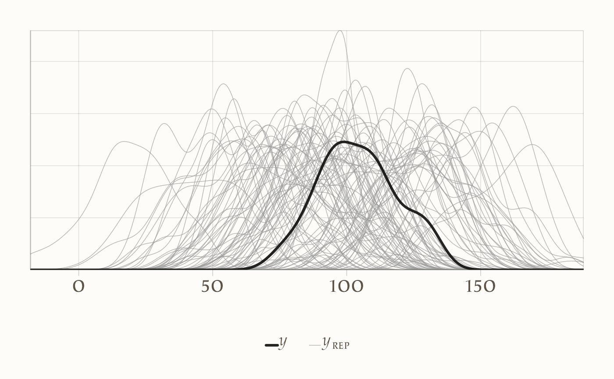
Interpretazione:
- Se le distribuzioni simulate coprono bene la variabilità dei dati reali, il prior è plausibile.
- Se le simulazioni sono sistematicamente troppo larghe o troppo strette, il prior va ripensato (riducendo o ampliando
mu_prior_sd).
13.5.2 Posterior predictive check
Dopo aver verificato che il prior sia ragionevole, possiamo passare alla fase successiva: confrontare il modello dopo aver visto i dati.
Per farlo, riattiviamo la verosimiglianza (compute_likelihood = 1) e stimiamo la distribuzione a posteriori di \(\mu\). Nel blocco generated quantities, Stan genera anche delle repliche posterior predictive \(y_{\text{rep}}\), cioè nuovi dataset simulati sotto l’ipotesi che il modello e i parametri stimati siano corretti.
In altre parole:
- il prior predictive check serve a testare le assunzioni prima dei dati,
- il posterior predictive check serve a valutare se il modello dopo i dati è in grado di riprodurre l’evidenza osservata.
Lancio del campionamento:
fit_post <- stanmod_ppc$sample(
data = stan_data_post,
iter_warmup = 1000,
iter_sampling = 10000,
chains = 4,
parallel_chains = 4,
seed = 4790,
refresh = 1000
)Estrazione e confronto con i dati reali:
y_rep <- fit_post$draws("y_rep", format = "matrix")
ppc_dens_overlay(y = stan_data_post$y, yrep = y_rep[1:100, ])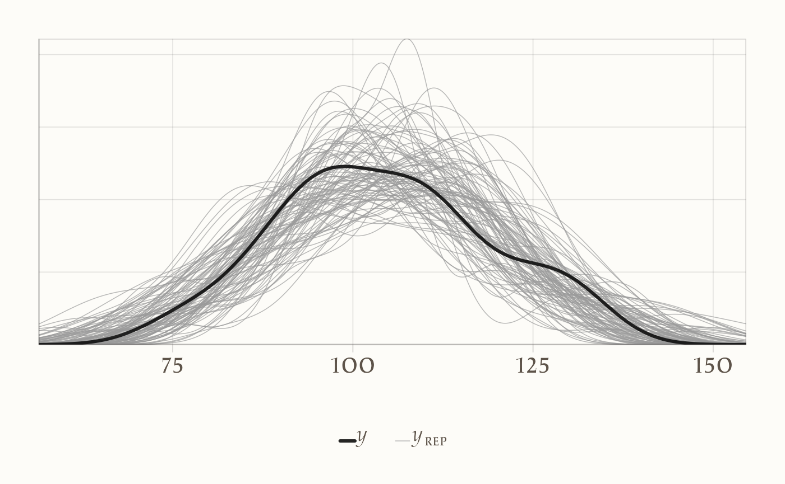
Interpretazione:
- se la distribuzione delle repliche \(y_{\text{rep}}\) copre bene la distribuzione osservata \(y\), significa che il modello è in grado di spiegare i dati;
- se invece ci sono scostamenti sistematici (ad es. le repliche hanno media troppo bassa, o varianza troppo alta rispetto ai dati reali), il modello non descrive adeguatamente il fenomeno e potrebbe essere rivisto.
Collegamento con la verifica dei prior.
- Un prior troppo largo può portare a simulazioni estreme e poco plausibili prima dei dati.
- Un prior troppo stretto rischia di imporre eccessiva rigidità al modello, lasciando poca flessibilità ai dati.
- Nel posterior predictive check, quello che conta è verificare che, dopo aver aggiornato il modello con i dati, le simulazioni riflettano in modo realistico il comportamento osservato.
Metafora. È come provare una ricetta: prima assaggiamo l’impasto crudo per capire se gli ingredienti sono dosati bene; poi, una volta cotto, assaggiamo il piatto finito per verificare che il risultato sia quello che ci aspettavamo.
13.5.3 Nota didattica
Con \(\sigma\) noto e \(\mu \sim \mathcal{N}(\mu_0, \tau)\), la distribuzione predittiva a priori della media campionaria \(\bar{y}\) è:
\[ \bar{y} \sim \mathcal{N}\!\big(\mu_0,\; \sqrt{\tau^2 + \tfrac{\sigma^2}{N}}\big). \]
Questa formula fornisce un controllo rapido per tarare il prior rispetto alla precisione attesa del campione. Dopo l’aggiornamento con i dati, la distribuzione a posteriori restringe l’incertezza, e le repliche posterior predictive permettono di verificarne la coerenza empirica.
Riflessioni conclusive
Stan rappresenta il punto di arrivo naturale del percorso che abbiamo seguito fin qui. Dopo aver compreso la logica generale dell’inferenza bayesiana con Metropolis e aver visto come i linguaggi probabilistici abbiano reso praticabile questa logica, Stan ci offre ora uno strumento concreto per applicare questi principi a modelli reali e complessi.
Il suo valore non sta soltanto nella potenza computazionale, ma soprattutto nella possibilità di spostare l’attenzione dal calcolo all’idea scientifica. Con Stan possiamo tradurre ipotesi psicologiche in modelli formali, esplicitarne le assunzioni e ottenere inferenze riproducibili senza perdere di vista la sostanza teorica.
In questo senso, Stan non è solo un software: è un ambiente che incoraggia la trasparenza, la chiarezza e la cumulatività della ricerca. Nei prossimi capitoli vedremo come utilizzarlo a partire da esempi semplici, per poi affrontare modelli più ricchi. L’obiettivo è acquisire familiarità non solo con la sintassi, ma soprattutto con il modo di pensare che rende la modellazione bayesiana uno strumento essenziale per la psicologia scientifica contemporanea.
Bibliografia
Nicenboim, B., Schad, D. J., & Vasishth, S. (2025). Introduction to Bayesian data analysis for cognitive science. CRC Press.